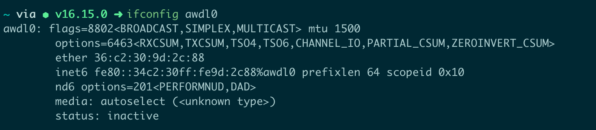

我的电脑在公司使用无线网络时经常性断网，为了有稳定的网络我在工位时经常接根网线，使用网线连接。之前公司运维给了个叫 WiFriedX 的工具来解决这个问题，最近发现问题又出现了，开会时断网非常耽误事，所以就又着手开始排查。
最后定位到是苹果搞的 AWDL 引起的，AWDL 全称：Apple Wireless Direct Link 苹果无线直连，用于 AirDrop、AirPlay 和其他服务的低延迟高速率 WIFI 点对点传输功能。苹果为它提供了独立的网络接口，可以通过 ifconfig awdl0 看到其状态。

苹果的操作内核为1个 WiFi Broadcom 硬件芯片提供了多个 WiFi 接口：
- en0：主要 WiFi 接口
- ap1：用于 WiFi 网络共享的接入点接口
- awdl0：苹果无线直接链接接口
通过拥有多个接口，我们的电脑就能够在 en0 上建立标准 WiFi 连接，同时在 awdl0 上广播、浏览和解析点对点连接。
这导致的问题是信号不稳定，只要 AWDL 处于活动状态，它就会持续在后台探测附近的其他设备，在使用时会短暂干扰 WiFi 运作，在目前无线网络连接和 AWDL 频道直接来回切换。猜测在公司时问题更严重是因为公司的无线AP 比较多，导致的干扰也就更强。
在网上查找解决方案的时候发现 Apple 芯片的 Mac 更容易出这个问题，比如 M1、M2。
我前边提到的工具WiFriedX实际上就是通过关闭 AWDL 来解决网络不稳定的问题，但我发现它关闭的并不是那么彻底，关闭一段时间后，又在后台被其他进程开启。
我通过手动的方式关闭 awdl0 网卡：
1 | sudo ifconfig awdl0 down |
在刚执行完后查询状态时，确实改为了 inactive，过了一会发现又变回了 active。查资料说的是如果本地启动了 AirDrop，AWDL 将立即重新启用；Bonjour discovery 还将每隔几分钟重新启用一次 AWDL。
感谢开源社区，已经有其他人发现了这个 AWDL 的坑，并且也想长期关闭它，于是写了脚本来在后台持续监听这块网卡的状态并将其关闭。
核心代码如下：
1 | #!/usr/bin/env bash |
这段逻辑会每秒钟检测一次 awdl0 网卡状态，如果是开启就进行关闭。
运行这段代码可以达到永久关闭 awdl0 网卡的效果，但是如果是我们每次手动运行它会比较麻烦，每次重启电脑后还要记得再次运行。于是大神们继续封装，将这个代码在系统后代常驻运行，重启时也会自动启动。
永久关闭 AWDL
通过下边这个命令，可以把上边的脚本放在后台服务中一直执行，同时跟随系统启动：
1 | curl -sL https://raw.githubusercontent.com/meterup/awdl_wifi_scripts/main/awdl-daemon.sh | bash |
恢复 AWDL
关闭后会影响 AirDrop 功能，如果想用手机给电脑投个文件或者照片之类的就很不方便。
如果要恢复 AWDL 可以使用下边的命令：
1 | curl -s https://raw.githubusercontent.com/meterup/awdl_wifi_scripts/main/cleanup-and-reenable-awdl.sh | bash &> /dev/null |
快捷键
在 shell 的 rc 文件中配置两个 alias，就可以实现快捷键一键开启和关闭 AWDL 功能了：
1 | alias awdldown='curl -sL https://raw.githubusercontent.com/meterup/awdl_wifi_scripts/main/awdl-daemon.sh | bash' |